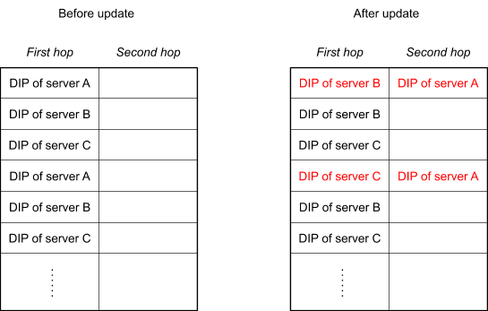
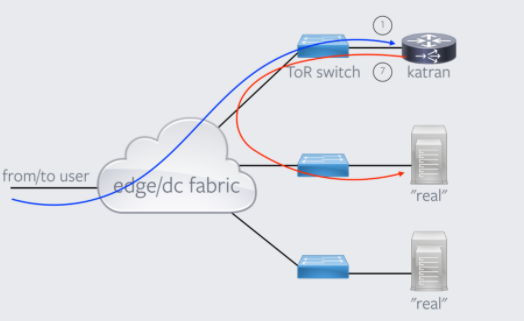

#1124 cloudflare 的四层代理转发逻辑¶
基本的转发逻辑¶
对于到达边缘节点服务器上的包，unimog 的处理逻辑如下：
- 如果包是否是发给 VIP 地址的，如果不是则 pass 给内核去处理（VIP 由 xdpd 从 consul 获取）。
- 如果是，则计算决定这个包发往哪个 DIP 去处理。
- 封装包，然后发回网络上去。
所有服务器上的 unimog 只共享 forwarding table，unimog 之间不会互相通信，不需要共享状态，是 stateless 的。
DIP 的计算过程如下：
key = hash (src ip, src port, dst ip, dst port)
N = log (len (forwarding_table))
DIP = forwarding_table [key&N]
forwarding table 的长度大概是实际服务器数量*100，并且长度一定是 2^N。
cf 一个节点的服务器数量在百级别，所以 fowarding table 的条目长度也就在万级别。forwarding table 初始化就是从第一个服务器开始依次往里填，填完了再从头开始，直到把整个表填满。
已建立连接的维护¶
fowarding table 中每一个条目包含两列，也就是保存了两个版本的 DIP（最新版本 /first hop 列，前一个版本 /second hop 列）。每次更新一个条目里的 DIP 时，将新的 DIP 放在 First hop 列中，将之前的 First hop 放入到 Second Hop 中。
unimog 将包转发给 first hop 列中的 DIP，second hop 中的 DIP 会被封装在包中一并转发过去（也就是整个过程只需要查一次 forwaring table），first hop 的服务器会检查这个包在内核中是否有对应的 tcp 连接，如果有则还原包交给内核后续处理，如果没有，那么取出 second hop 中的 DIP，并将其转发过去。执行这一逻辑的组件叫 redirector。
对于 forwarding table 的每一个条目，cf 只包含了两个版本，所以对于保持已经建立完成的连接的策略也就是一种 best effort，如果这两跳之内找不到之前处理连接的服务器，那么这个连接也就断了。所以对于每一个条目，应该尽可能避免短时间里大量修改。以下是 cf 采用的两个策略：
- 对于新机器上线，尽量选择 least recently modified 条目来分配给新机器。
- 对于调权重，尽量采用交换 first hop 和 second hop DIP 的方式，保证即使频繁修改，已经建立的连接肯定能在两跳之内找到。
redirector 的实现¶
第一版采用的是 glb 中的 glb-redirect iptables 模块，https://github.com/github/glb-director/tree/master/src/glb-redirect
第二版采用的是自己写的一个 TC bpf 程序（自己写的原因是 glb-redirect 是内核模块，开发变更麻烦，采用 TC bpf 主要是可以复用现有的各种网络开发调试工具，xdp 不好调试）。
https://man7.org/linux/man-pages/man8/tc-bpf.8.html
第二版的逻辑 blog 里说是贡献了在： https://github.com/torvalds/linux/blob/c4ba153b6501fa7ccfdc7e57946fb1d6011e36e8/tools/testing/selftests/bpf/progs/test_cls_redirect.c
整体架构概括¶
从一个 tcp 包在系统里的流动过程来看：
- 首先包发到 VIP 地址上，unimog 程序根据 forwarding table 确定转发到的机器的 DIP。然后使用 GUE 格式将原始包封装后转发给目标 DIP。
- 转发到的机器上有一个 redirector 程序会处理 GUE 包，如果是新连接（syn 包），直接给本机处理，如果是已建立的连接，确定连接是否在本机上，是的话还原原始包然后交给内核继续处理，不是转发给下一跳。
- 第 2 步中的包还原后这个包就跟直接发给这个机器的一样，后续回包什么的也不需要进一步的处理了。
从系统组件来看，主要包括以下组件：
- unimog，根据 forwarding table 转发包。
- redirector，还原包 / 转发下一跳等，可以复用 glb-redirect 或者参考 cf 的 tc bpf 程序实现。
- conductor，控制程序，管理 forwarding table。
下一步计划，先实现一个简单的原型，验证上面这些技术、熟悉 xdp 相关的开发、工具链。主要是上面组件中的 1，2 部分。
封装成 GUE 包 后，按照交换机标准 MTU 1500 个字节的最大限制，报文是不是会超出 MTU 1500 的长度，这个是如何处理的？
> An issue that can arise with encapsulation is hitting limits on the maximum packet size, because the encapsulation process makes packets larger. The de-facto maximum packet size on the Internet is 1500 bytes, and not coincidentally this is also the maximum packet size on ethernet networks. For Unimog, encapsulating a 1500-byte packet results in a 1536-byte packet. To allow for these enlarged encapsulated packets, we have enabled jumbo frames on the networks inside our data centers, so that the 1500-byte limit only applies to packets headed out to the Internet.
cf 在数据中心内部启用了 jumbo frames (交换机 / 路由 / 服务器都得配置)，允许超过 1500 的包，1500-byte 的限制只限制发出到公网的包。
https://linuxconfig.org/how-to-enable-jumbo-frames-in-linux
unimog 的转发用的是 xdp 的 tx action，所以其对网络拓扑有和 katran 一样的要求，即 “从客户端到 l4lb” 和 “从 l4lb 到 l7lb” 走的是同一个网络接口。如下图所示：
https://github.com/facebookincubator/katran#environment-requirements-for-katran-to-run